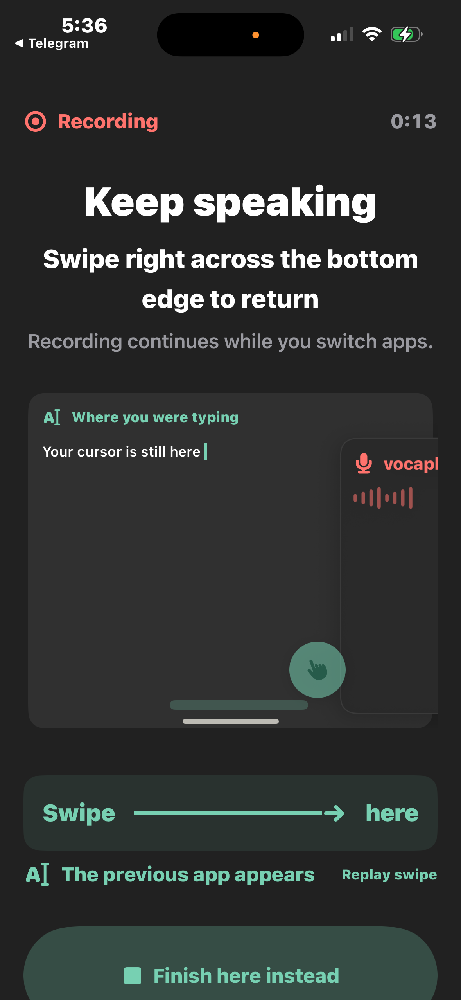

vocaphone
01 / START IN VOCAPHONE
Your app records.
Start dictation from the keyboard. VocaPhone opens to record your voice.
iPhone · Screenshot walkthrough
Real beta captures · August 2026 · Not live timing
